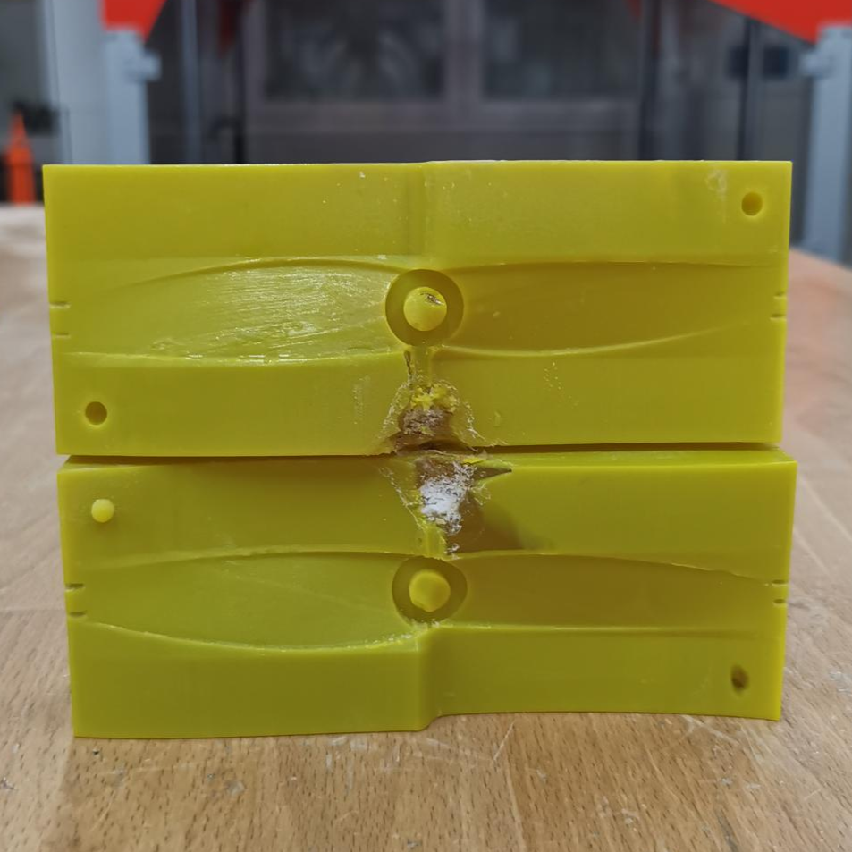
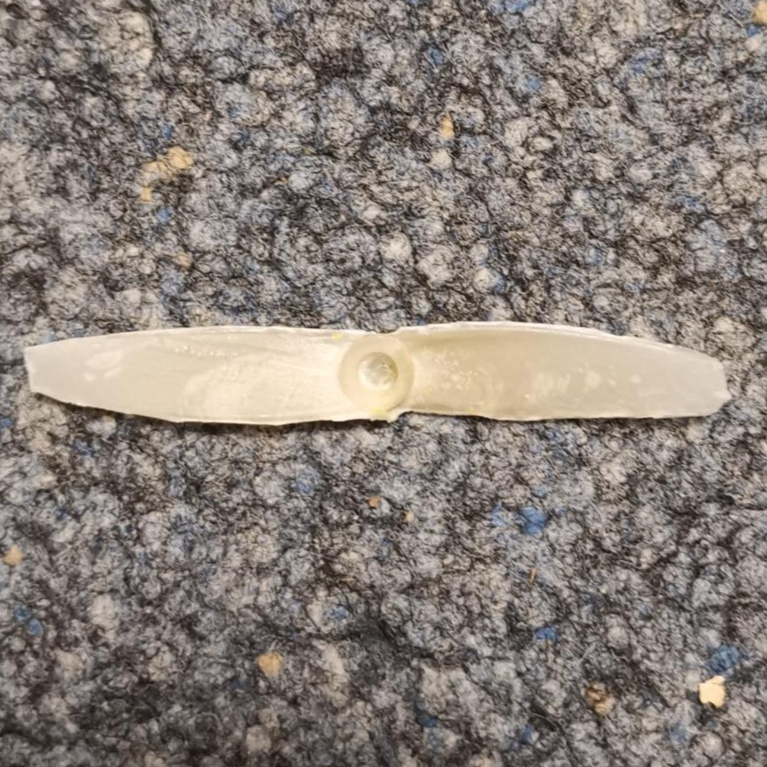

Injection Molding
Instruction Video INJEKTO 2

Injection molding is a manufacturing process used to produce plastic parts by injecting molten material into a mold. For this process, an accurate mold must be made beforehand, which can be created either manually or by using 3D printing technologies. The mold usually consists of two halves that form a cavity in the shape of the desired part. The quality and precision of the mold are crucial because they directly affect the final product's detail and accuracy.
The process starts by clamping the mold halves tightly in a simple press to ensure they stay securely closed during injection. Plastic granules are then heated until molten and injected under high pressure into the mold cavity. The molten plastic fills every detail of the cavity and then cools and solidifies to take the final shape. Once cooled, the mold opens and ejector mechanisms push the solidified part or its extracted by hand.
Injection molding is especially suited for producing slim parts with consistent thickness because the molten plastic fills these narrow cavities more easily and cools uniformly. Slim parts also help prevent warping and uneven shrinkage, which are common challenges in thicker or more complex shapes. Due to the mold and machine setup required, injection molding is ideal for repeated production of high volumes of identical parts with excellent surface finish and dimensional precision.
Overall, injection molding in a simple press is a cost-effective and relatively quick manufacturing method for producing plastic components, especially slim designs. It combines material versatility with repeatability, though mold creation and machine operation require care and experience to avoid defects like warping or inclusions. This method is widely used for manufacturing everything from packaging components to automotive and consumer product parts.
